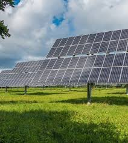
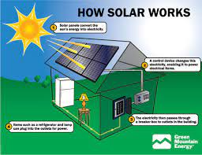

solar energy facts
Solar energy is the fastest growing and most affordable
source of new electricity in America. As the cost of
solar energy systems dropped significantly, more
Americans and businesses have taken advantage of clean energy.

How does solar power work?
Solar power works by converting energy from the sun into power.
There are two forms of energy generated from the sun for our
use – electricity and heat.
Both are generated through the use of solar panels, which range
in size from residential rooftops to ‘solar farms’ stretching
over acres of rural land.
How exactly is electricity from solar energy produced?
Solar panels are usually made from silicon, or another semiconductor
material installed in a metal panel frame with a glass casing. When this
material is exposed to photons of sunlight (very small packets of
energy) it releases electrons and produces an electric charge.
This PV charge creates an electric current (specifically, direct
current or DC), which is captured by the wiring in solar panels.
This DC electricity is then converted to alternating current (AC)
by an inverter. AC is the type of electrical current used when you
plug appliances into normal wall sockets.
